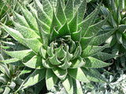
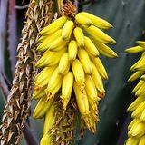
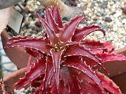
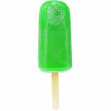
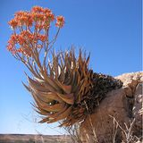
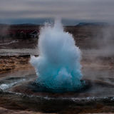
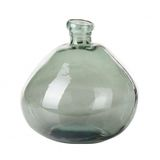
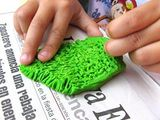
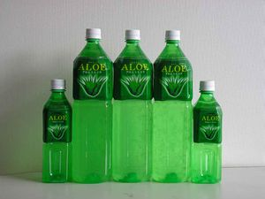

Aloe
 De: La Frikipedia, la enciclopedia extremadamente seria.
De: La Frikipedia, la enciclopedia extremadamente seria.
De la serie botánica para todos:
| Nombre común:
|
Aloe
|
| Nombre científico:
|
Aloem Quelocurustodus
|
| Especie:
|
Planta
|
| Subespecie:
|
Pacurá
|
| Clima:
|
Religioso (para curar más, quiere ser cura)
|
| Zonas en las que se da:
|
Hóspitales e iglesias
|
| ¿Es comestible?:
|
Sí
|
| ¿Es fumable?:
|
Quizás...
|
| Morfología (para el que sepa que es esto):
|
¿Eso que és lo que és?
|
| Finalidad de su existencia:
|
Curarte
|
El Aloe (en latin "emabarradus verdis") es una planta que origen africano con habilidades increibles como la curación instantánea o la manipulación mental. De por si, es la única planta que puede sobrevivir al espacia y los incendios forestales. Incluso a logrado aguantar tsunamis o bombazos nucleares, con lo que se puede llegar a afirmar que podria llegar a sobrevivir a un apocalipsis donde todo rastro de existencia fuera aniquilado. Fue originalmente usada como lubricante de autos, cura absolutamente todo incluso el mal de ojo pero se aconseja mezclarla con grasa humana. Hoy día se usa para todo, incluso para guionizar algún capítulo de Padre de Familia.
Mito e Historia
La leyenda del aloe comenzó al rededor del 1200 antes de cristo, en una era donde Roma y Egipto pelearon por el control mundial.
Aloe el Egipcio
En el Antiguo Egipto, en el año 5000 antes de Brian de Nazaret, los esclavos apenas podían rendir bien en las mamadas construcciones debido a las heridas anales que recibían por parte de los "latigueros" se sobrepasaban con su practica latiguera... Fue entonces, cuando apareció Anubis que viendo el panorama se empalmo deprimió y empezó a llorar por los oídos cera. De aquella cera nació una planta increíble. Aquella planta era el aloe, pero lastimosamente no seria descubierta hasta 4200 años después. Cuando se descubrió tan fantástica planta, decidieron usarla para los funerales y fabricar bebidas para el consumo familiar. También se uso para embalsamar los cadáveres, fabricar casas y lubricante para los prostíbulos. Se gano la reputación de la planta "espiritual" (titulo que perdió a manos de su archienemiga, la marihuana) y se regalaba esta planta a los recién casados, que como se imaginaran, usaban de lubricante. Los religiosos de la zona la utilizaban para proteger sus hogares de espíritus malignos como los castores o las ranas. En la Biblia hay numerosísimas referencias a áloe, pero ninguna beneficiosa, ya que citaban que nada excepto dios podía curar las heridas y que algo así era obra del diablo...
Se sabe que a partir del siglo VI a.c los árabes la llamaban como "El Chichi del desierto" y le daban un uso vaginal medicinal tanto interno como externo (principalmente cuando estabas con el intestino lleno de mierda y poder vaciarlo). En el sur de África se lavaban cuerpo y cabello con su gel porque creían que su piel negra era caca servia de protección solar, atrapa insectos y también curaba la gorronea.
Alejandro Magno y la obsesión por el áloe
Cuenta la leyenda que el guerrero Alejandro Magno recibió información sobre los increíbles poderes del Aloe, proveniente de la isla de Lost en la costa africana al sur de Arabia, donde tenían un cultivo igual de grande que el Monte del Destino. Alejandro al enterarse que podía aliviar las almorranas, fue a toda pastilla a conquistar esas tierras (ya de por si, tanto sus amantes como él, tenian que aliviarse, que o era dejar de follar o cambiar de orientación sexual). Entre sus tropas, estaba el gran Aristóteles, que más adelante fabricaría el huento de áloe para traseros, (marca registrado por Alejandro Magno). Tan buen resultado dio, que el general Magno mandó fundar en Socotra una colonia con el único fin de preservar y cultivar estas plantas aliviaban el dolor anal. Más adelante, los griegos y los romanos también lo usarían de papel higiénico laxante.
Tristemente en la Edad Media fue prohibido su uso y cultivo hasta la era del Renacimiento en la que fue usado principalmente por el vaticano para servir de energiza para vehículos, cosa que apenas funciono. Sin embargo se descubrió un nuevo uso para la planta, ser un preservativo decorativa.
Actualmente su uso es el de curar, regenerar y drogar a las personas.
Tipos de aloes
Aquí esta el listado de aloes:
| Personaje
|
Descripción
|
 Aloe Primavera |
- El Aloe más común en este ecosistema. Sus características principales son su fuerza y agilidad. Su interior es
semen un pringue transparente con sabor a pis hagua y sal. Se dice que si la tienes en tu habitación, que mientras duermes, aumentara el tamaño de tu pene (incluso si eres mujer).
|
 Aloe Verano |
- Aloe amarillo que no debe confundirse con los plátanos. Este aloe permite no solo curar heridas, sino dejar un ligero aroma a
polla plátano que atrae al sexo que te gusta, ya sean mujeres o hambres (no funciona con los caracoles). Se recomienda no ingerir ya que tiene sabor a cigarrillos.
|
 Aloe Otoño |
- Este aloe es de una naturaleza un tanto distinta del resto. A pesar de tener las mismas propiedades que el aloe tradicional, su jugo es como mermelada con sabor a sangre. Nace en lo más profundo del infierno y aunque es difícil de encontrar en primavera, es muy común toparse con esta planta en otoño. Extrañamente, todas las plantas que crecen a su alrededor acaban quedando secas
debido al sexo.
|
 Aloe Invierno |
- Aloe caracterizado lo difícil que resulta de aplicar debido a su baja temperatura. Normalmente se usa unicamente para apagar incendio en el acto del coito. Sin embargo, precisamente gracias a su baja temperatura se aconseja usar cuando se tiene fiebre
metiéndoselo por el ano.
|
Aloe Sarrera |
- Aloe extremadamente seco con muy poca sustancia interna, normalmente crece en tierras extremadamente secas. Se usa solo de adorno en los jardines ya que atrae a los cerdos salvajes. Actualmente se esta estudiando si puede curar el cancer.
|
Aloe Caganera |
- Aloe con fétido olor y que normalmente tiene forma de... ¿Regayton? A pesar del fuerte tufo que pose, es muy utilizado, sobre todo cuando se desea hacer una broma de mal gusto o en una situación de máxima desesperación.
|
 Aloe Chafardera |
- Aloe con la increíble habilidad de escuchar a más de 400 metros y luego contártelos. Resumiendo, que si lo dejas al lado de tus vecinos, te puedes enterar de todos los trapos sucios que hay en la comunidad. Sin embargo, debe vigilarse porque al igual que puede explicarte las jodidas de los demás´también puede hacerle lo mismo ha usted y debe prevenirse. Normalmente es usado por la TIA.
|
 Aloe Sopera |
- Posiblemente el aloe más divertido de todos. Puede adoptar cualquier forma pero su único color es el azul pitufo (¿Pero a quien le importa? ¡Puede cambiar de forma!) Normalmente es usado para poder volar al más puro estilo de el humo negro, aunque últimamente se usa para hacer explosivos plásticos.
|
 Aloe Pera |
- Extraño Aloe con forma de pera cristal que sabe a caramelo. Se sospecha que fue creado por Steve Jobs en un intento por hacerse publicidad y dominar el mundo. Se suele usar para fregar los platos de casa.
|
Aloe Pantera |
- Es sin dudar el aloe más agresivos de todos, es capaz de comerse a sus hijos con tal de sobrevivir. Si restriegas su hoja sin haberla cortado bien puede dejarte la piel muy fina, tan fina que es posible que por piel te queden los huesos o ni eso.
|
Aloe Fiera |
- Aleo que provoca efectos estirituales en el que podemos entender nuestro propia mente sin necesidad de psicologos o psiquiatras. Posiblemente es de los aloes que han creado más polémica debido a las fuertes alucinaciones que provoca en la mente.
|
 Aloe Cera |
- El Aloe menos evolucionado hasta la percha, digo fecha. Su principal carecteristica es que tiene
pene piel ni espinas, así que es como una crema de cera. No se aconseja injerir, aunque no sea venenoso, provoca unos dolores de estomago casi mortales.
|
Aloe Bote |
- El aloe más común en todo el universo (después del de primavera). Directamente viene en pote y no es muy especial que digamos...
|
Usos del aloe
 Ahora con gas ¿Que no la tienes? Si no la tienes, no eres nada.
Tiene tropecientos y pico tipos tropecientos y pico usos. Bueno, tampoco tiene tantos, pero a caballo regalado... De hecho, El Fary se frotó uno en la cara y se quedó cómo esta ahora. Veamos otros grandes usos:
- Elimina picores.
- Revive muertos.
- Habla todas las lenguas.
- Sabe filosofía.
- Se puede usar de alimento.
- No te recomiendo fumártela. Mejor deja que se la fume tu peor enemigo.
- Baila flamenco.
- Sabe hacer ecuaciones irreversibles matemáticas con números primos, sobrinos, nietos, abuelos, madres, padres, etc...
- Mata al moho.
- Elimina el efecto invernadero.
- Tiene poderes mágicos.
- Puede volar
- Tiene superfuerza.
- Si te lo untas en la piel, puedes enfrentar a Steven Seagal.
- Lleva dentro un genio.
- Puede hablar.
- Puede ver.
- Puede ser más feo que el Fary.
- Inventa canciones.
- Se clona a sí mismo.
- Gana, en todas las Olimpíadas, la medalla de oro en todas las pruebas.
- Sirve para disimular los gases.
- Se puede usar para curar cualquier cosa, o al menos como Placebo.
- Inventa leyes.
- Crear crema que se use
para dominar el mundo con la formula secreta del aloe de hacer cosas para regalar.
Instrucciones básicas para utilizar el aloe
Lo primero que tenemos que hacer, es obviamente obtener la planta. Puede comprarse la planta o en si se prefiere, su pija semilla. En el segundo caso, aconseja que después de plantarse, esperar aproximadamente entre 2 y 3 años.
Una vez pasado este corto lapso de tiempo, debemos violar arrancar desde el rabo tronco pero vigilando de no partir dicho tronco ya que el aloe podría morderle. Debe pedirle permiso y ha ser posible con anestesia (para usted, ya que a las plantas no se las puede dormir).
Una vez que hayamos extraído con suavidad la hoja de aloe, deberemos cortar las parte blanca que estaba unida al tronco ya que avinagrara la hoja y podría envenenar la sustancia. Sucesivamente hemos de cortar un trozo de más o menos un dedo (si le es difícil, se le aconseja cortarse su propio dedo y usarlo de regla). Después cortaremos los lados del trozo (de la hoja) y nos comeremos el interior.
Si desea usar el aloe para fabricar su propia mascarilla, véase los ingredientes necesarios y siga los siguientes pasos: Pulpa de hoja de aloe, arcilla, lubricante, whisky, germen de trigo y un churrito de miel. Mezclelo todo en un bol, póngalo al microondas durante cinco horas y después unteselo en la cara. Deje que actúe hasta que se seque y luego retire con agua tibia. Según la severidad del caso puede usarse las misma crema en tres ocasiones pero el tiempo estimado del que dispone para que conserve sus propiedades es de una semana.
Descendientes del aloe
Grandes citas sobre el aloe
House cuando le dicen que el aloe es más eficaz que él.
- ¡Dios mio! Me habian picado veinte medusas y esta
mierda planta es más eficaz que las cremas del Doctor House
- La libertad significa responsabilidad. Es por eso que la mayoría de la gente le teme al aloe.
- Es mejor la cantidad que la calidad, así vendemos las plantas.
- Joder, como lubricante servirá pero de gel, es hasta asqueroso
- El aloe realiza milagros para todo tipo de enfermedades, este si es un mesías de verdad
- Maldito seas aloe, yo se que Jebus es más poderos
- Aleo todo poderoso, bendecidos sean tus dotes, bendice estas
putas heridas que hacen que te usemos
- Más respeto. El aloe es el Bruce Lee de las plantas
- Si la mierda es Regayton, dios es el Aloe
- El aloe no necesita moverse, solo con existir te mata
- Lo que usted pueda hacer, empiezalo. Compre
cabras aloe
- Sin el aloe, no es que seas nada, es que nunca has existido
Curiosidades varias
- Es más fácil fumarse un porro que untarse aloe.
- Su crema
es plástico no sabe a nada
- Podrás follar a un ritmo descomunal si tienes aloe
- En realidad el interior del aloe son mocos
- El 666 es el número de la bestia, el del aloe es el ∞
- Hitler bailaba flamenco al lado del aloe, por eso nadie lo quiere
- Vin Diesel se enfrentó al aloe y quedaron empatados.
- En realidad no tiene hojas, son tentáculos violadores
- El aloe quiere a todo el mundo, ya esta
Autor(es):
- Barbadeus Motsand
- Doctor grijander
- ZeTaXuS
- Azulejos
- Nemesis
- Cibercrank
- Veni Vidi Vici
- Dark temptation
- Thai
- Taak
Frikipedia 2005-2016, Licencia
GFDL 1.2 - Extraído por FrikiLeaks